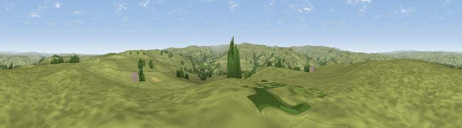

Catton Beacon
#9102 in England · top 20% of its area beats it · near CattonThe view, rendered

A 360° render of this exact spot computed from the terrain model, tree cover and land cover — summer colours, afternoon light, calibrated against photographs of famous viewpoints. Real trees, hedges and buildings will differ in detail.
The panorama
Grey silhouette: terrain skyline in each direction (720 bearings, Earth curvature and refraction included). Dashed green: skyline with trees (+15 m) and buildings (+8 m) as obstacles. Blue strip: how far the ground is visible on each bearing.
Where the view opens
Wedge length = distance to the farthest visible ground on that bearing (vegetation-aware). Rings at 10, 25 and 50 km.
What fills the view
95% grassland · 4% woodland
Angular shares of the visible panorama (visual magnitude), not map area. Landscape diversity 0.09 (0–1 Shannon).
Key numbers
More beautiful places nearby
The staircase of upgrades: each row has a higher view potential than everything closer. Driving times are estimates from straight-line distance, calibrated against real road routing — check an actual route before setting out.
| Place | Direction | Drive | Score |
|---|---|---|---|
| Viewpoint near Catton | SW · 5 km | ~10 min | 66.0 |
| Viewpoint near Allendale | SSW · 6 km | ~12 min | 68.1 |
| Viewpoint near Allendale | S · 7 km | ~15 min | 70.0 |
| Hotbank Crags | NNW · 10 km | ~20 min | 70.4 |
| Viewpoint near Bardon Mill | NNW · 11 km | ~21 min | 71.0 |
| Viewpoint near Fourstones | NE · 12 km | ~22 min | 71.4 |
| Viewpoint near Allenheads | S · 14 km | ~26 min | 74.6 |
| Grey Nag | SW · 20 km | ~33 min | 75.7 |
54.92784, -2.27890 · source: osm peak · position refined by local search. Computed location — check access rights before visiting.